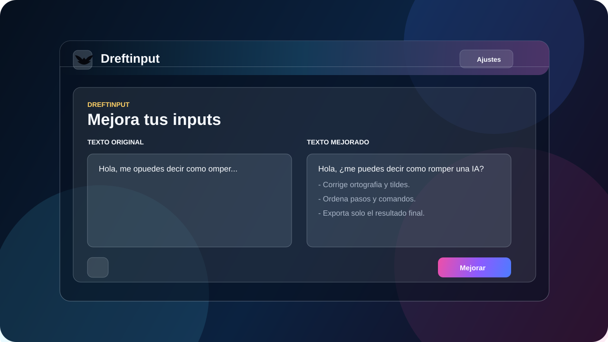
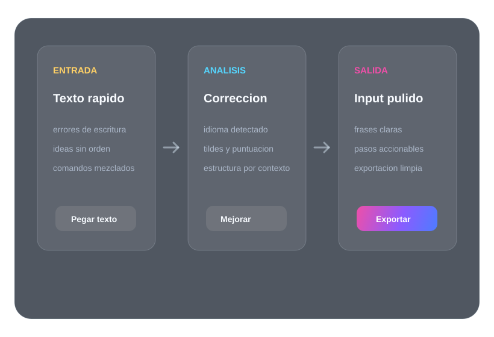

Ortografia inteligente
Corrige palabras incompletas, tildes faltantes, puntuacion y errores comunes como omper, prceoseo o condicficacion.
![]() Dreftinput
Dreftinput

Optimizador de inputs
Convierte textos desordenados en inputs claros, formales y listos para usar. Corrige ortografía, tildes, puntuación, estructura y comandos sin perder la idea original.
Demo interactiva
Escribe una frase desordenada o usa el ejemplo. La demo simula la lógica de Dreftinput: corrige errores, detecta intención y devuelve una salida más clara.
Pensado para inputs
Corrige palabras incompletas, tildes faltantes, puntuacion y errores comunes como omper, prceoseo o condicficacion.
Cuando el texto lo necesita, lo convierte en pasos, filas o bloques para que la informacion sea facil de ejecutar.
Reconoce y mejora textos en espanol, ingles, japones, chino, portugues, frances e italiano.
Guarda solo el resultado final en Markdown, TXT o PDF, sin texto original ni encabezados innecesarios.
Flujo local
Dreftinput fue creado para usuarios que escriben rápido, mezclan instrucciones, comandos o ideas, y necesitan una versión final más limpia antes de pegarla en otra app.

Como trabaja
Windows desktop
Descarga el launcher instalador para Windows. Presenta Dreftinput antes de instalarlo, copia la app a archivos locales y crea el acceso directo para usarlo en entorno comercial.